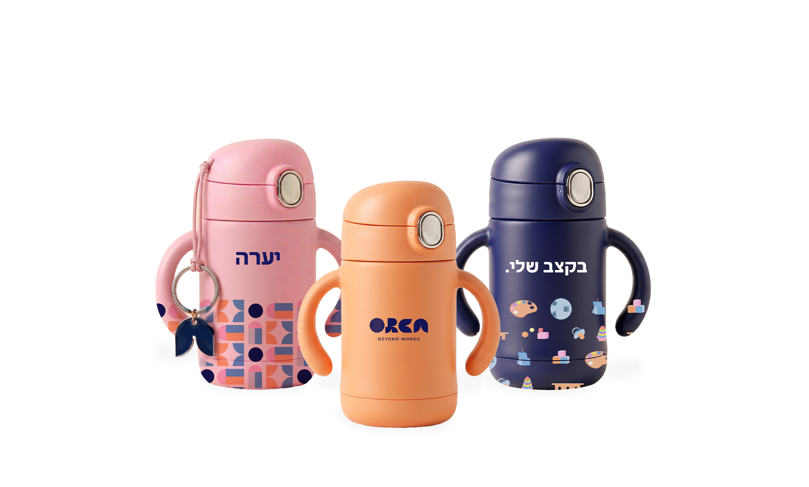
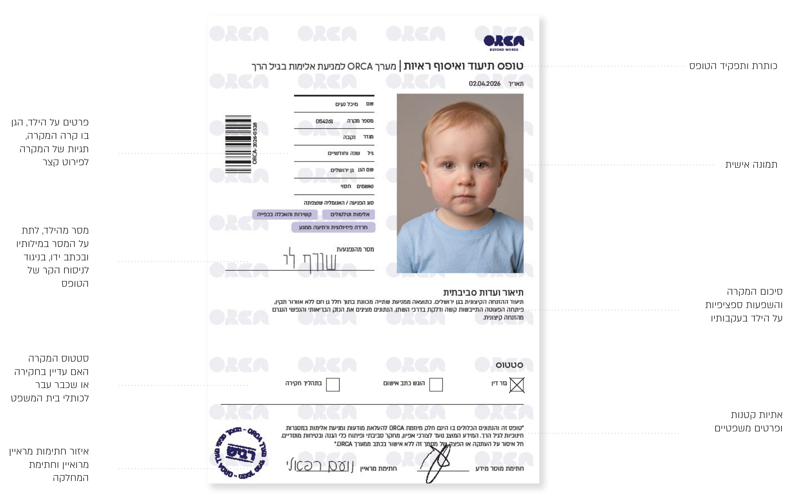
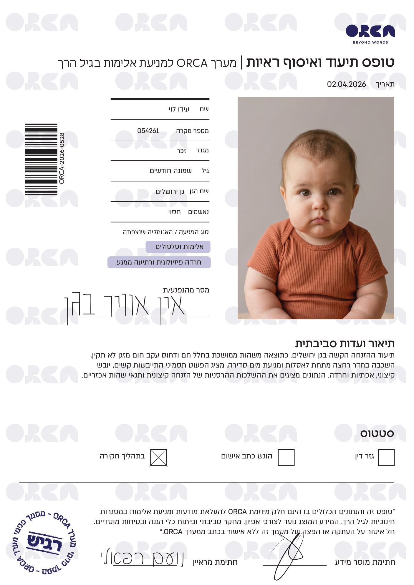
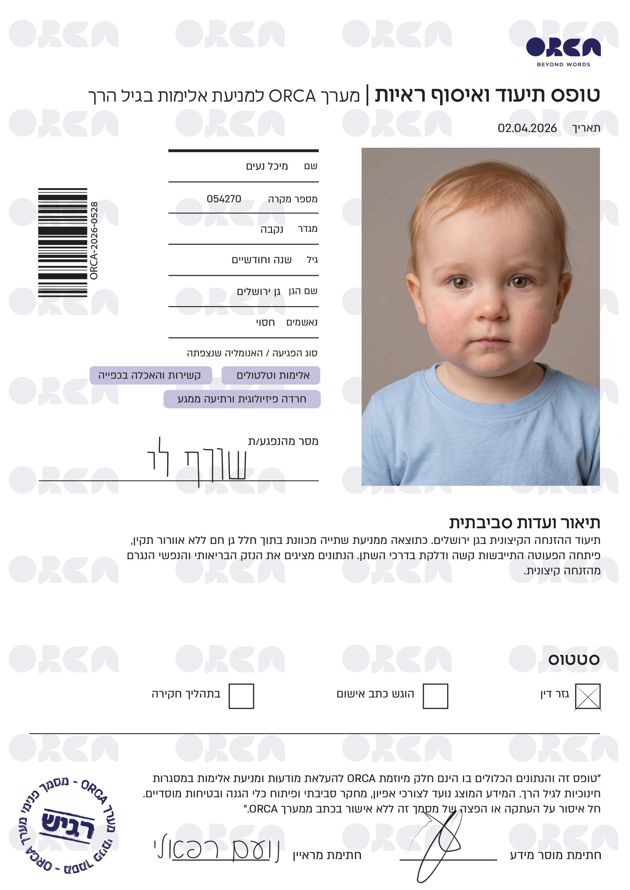
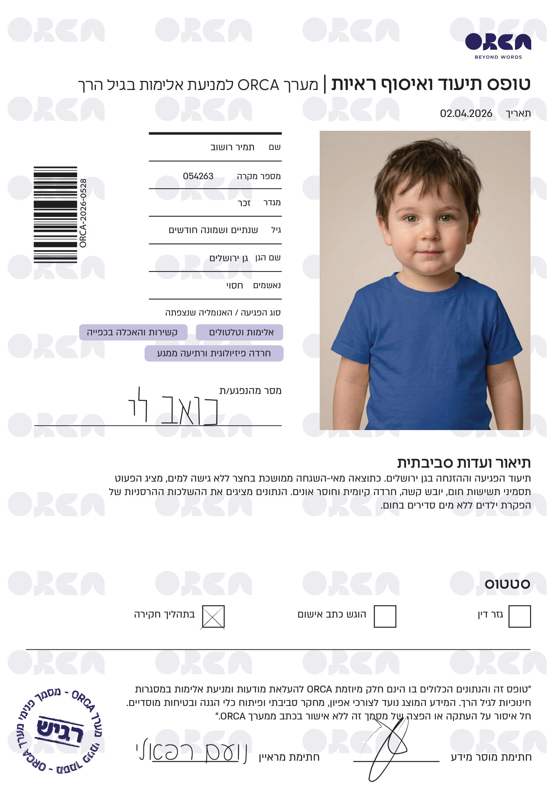
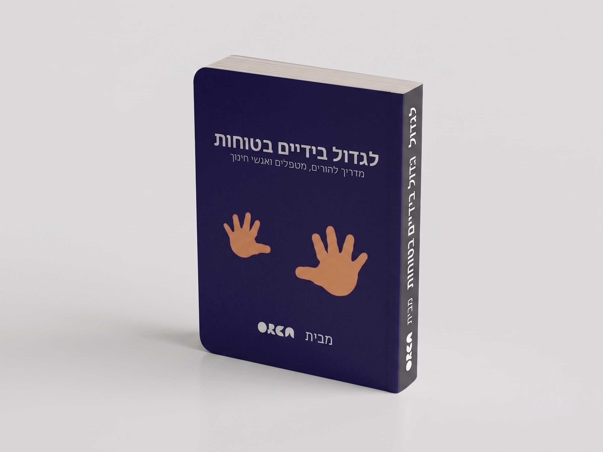
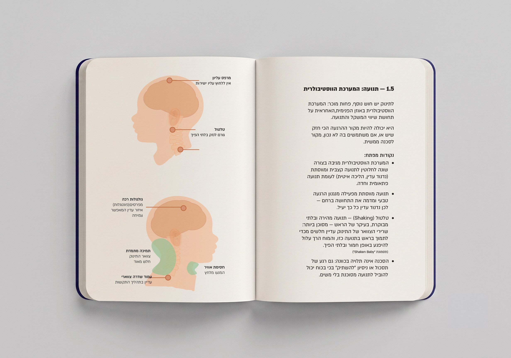
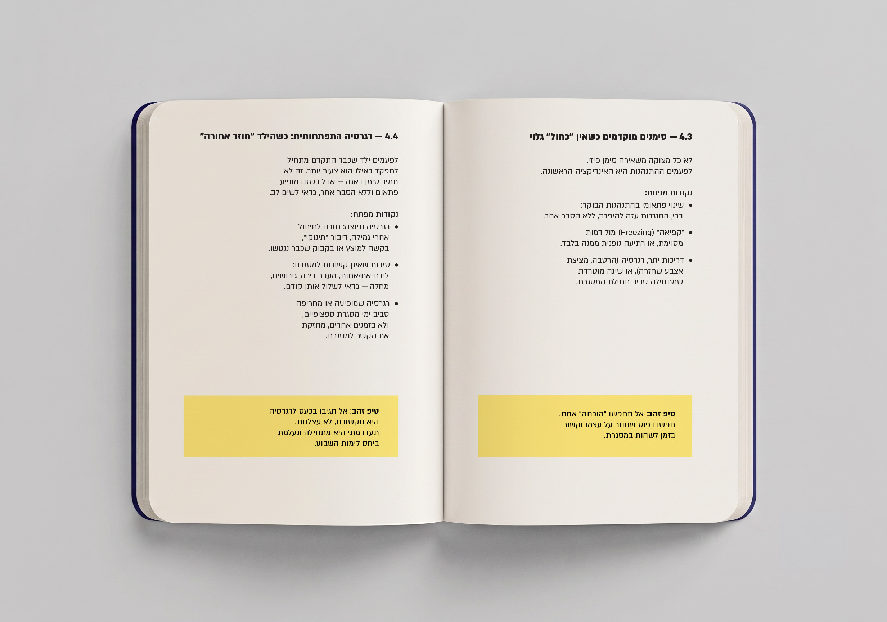
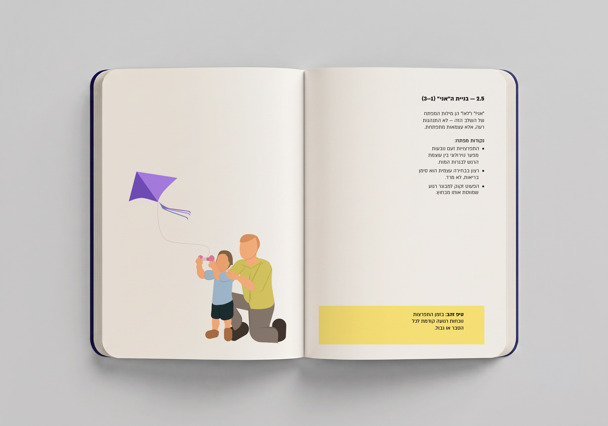

Orca — Beyond Words
A documentary awareness campaign giving voice to those who cannot speak for themselves.
A documentary awareness campaign giving voice to those who cannot speak for themselves.
Violence in early childhood education frameworks is an elusive and disturbing phenomenon, often remaining "invisible" due to the children's inability to testify about what they have experienced. The challenge was to use visual communication not just to point out the problem, but to give a voice to those who cannot speak for themselves and to spark an emotional resonance that demands a shift in consciousness and legislation.
A documentary project based on live testimonies. It includes a typographic installation, AI-based cinematic videos, and a VR simulator developed in Unity that allows users to experience the world from a toddler's perspective, aiming to create a deep emotional understanding that traditional campaigns fail to convey.




The testimony forms are a central part of the Orca installation, meant to break the cycle of alienating statistics. Each form is based on real cases collected in the field, with names and portraits generated by AI to protect privacy while giving every case a face, an identity and human presence. The format confronts the viewer with a moral question: what message would the children convey if they only had the words to tell what happened to them?
Breaking anonymity: a name, an age and a personal portrait turn every record from a dry number into living testimony that cannot be ignored.
The voice beyond words (handwriting): alongside the sterile, institutional detail, handwritten sentences echo the toddler's feelings and messages, turning an administrative document into a human evidence file that demands we listen.
Individual impact mapping: the form details the circumstances of the case, the way the harm occurred, and the health and emotional consequences unique to each child, conveying the depth and scale of the trauma.





"Grow in Safe Hands" is the content arm of the Orca project: a professional yet accessible guide for every parent and caregiver, helping them recognize distress signs in time, understand child development, and know how to act. Sized at A5, it is compact enough to carry anywhere and gives scientific knowledge in simple, practical language.


